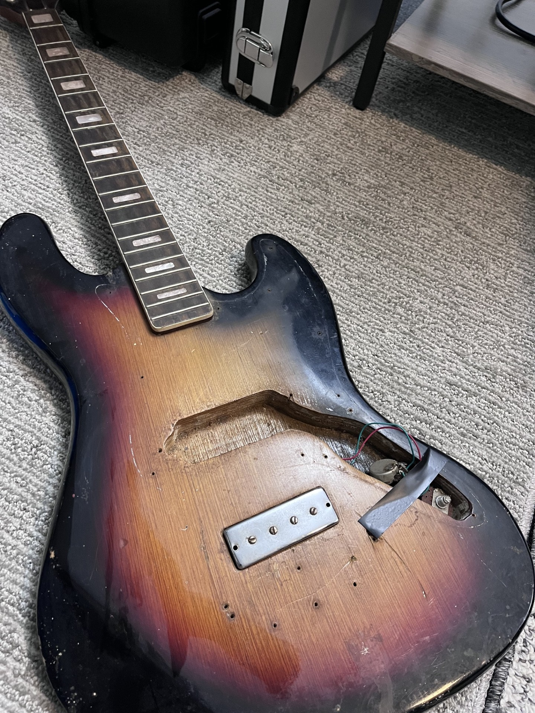
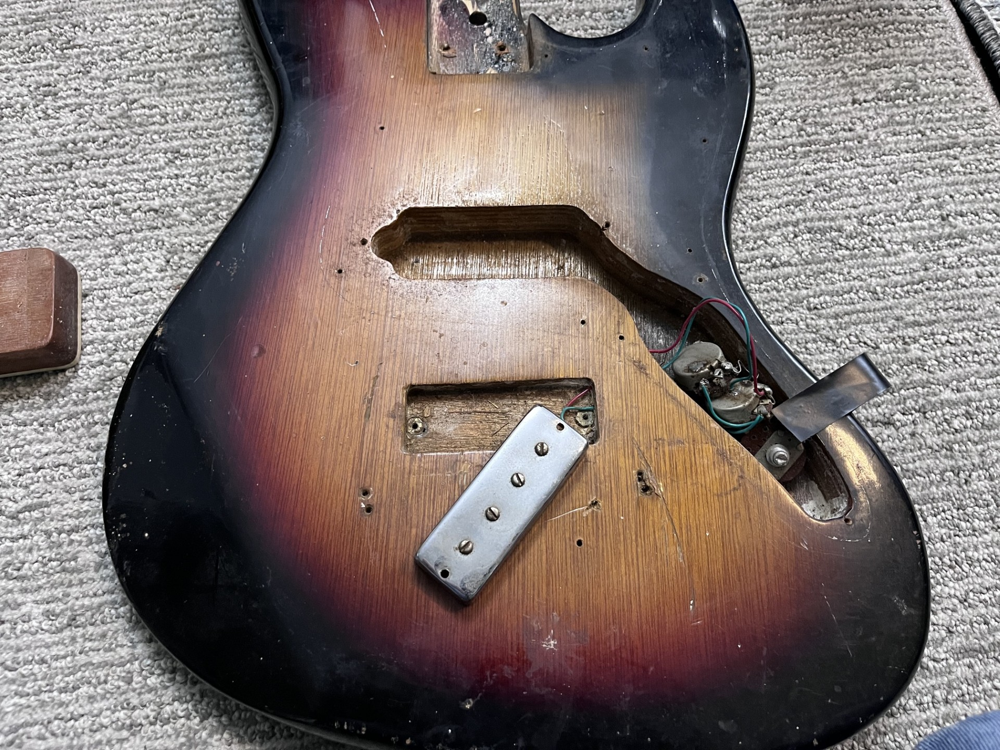
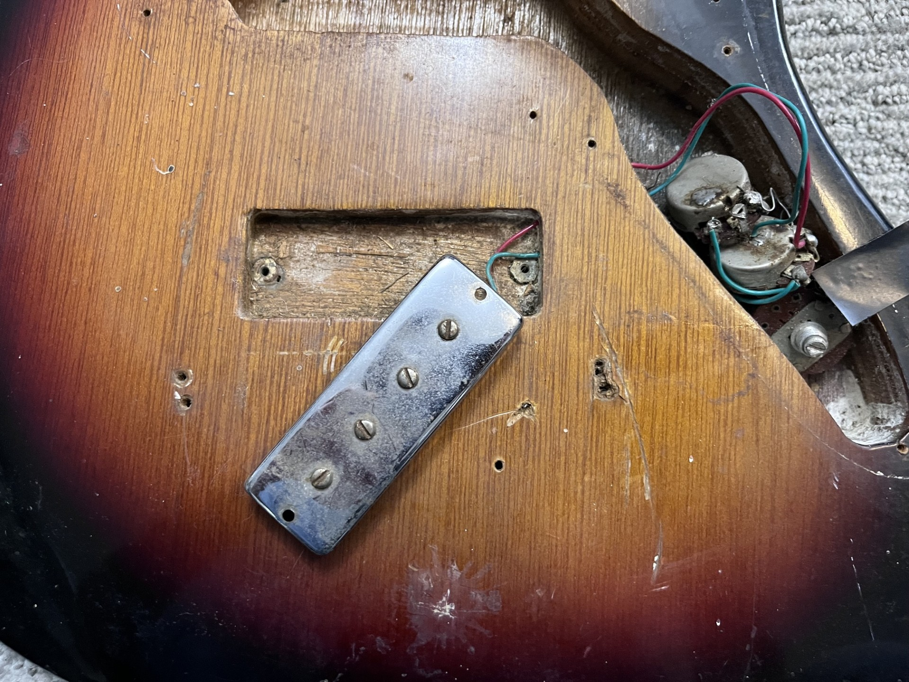
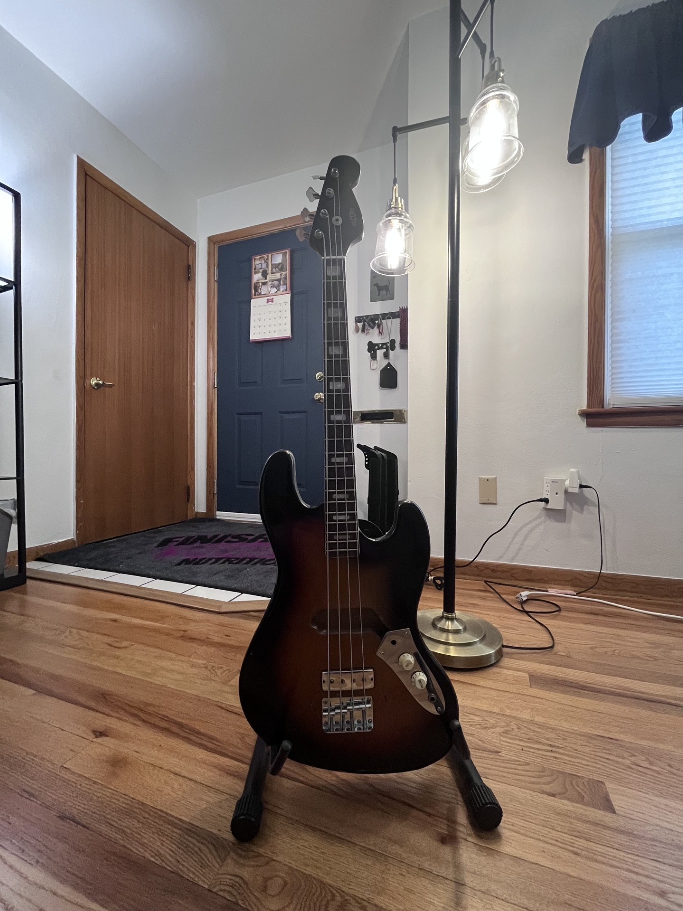
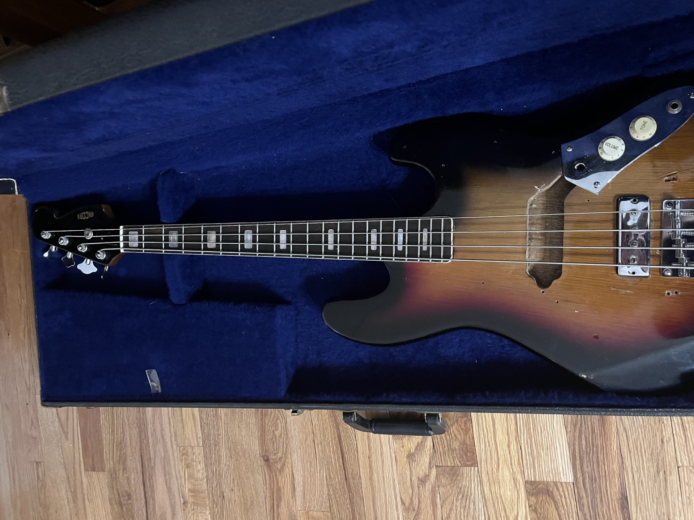

.... .. . s s s
+^""888h. ~"888h @88> :8 :8 :8
8X. ?8888X 8888f %8P u. u. .88 .88 u. u. u. .88
'888x 8888X 8888~ . u x@88k u@88c. .u :888ooo :888ooo ...ue888b x@88k u@88c. .u :888ooo
'88888 8888X "88x: .@88u us888u. ^"8888""8888" ud8888. -*8888888 -*8888888 888R Y888r ^"8888""8888" ud8888. -*8888888
`8888 8888X X88x. ''888E` .@88 "8888" 8888 888R :888'8888. 8888 8888 888R I888> 8888 888R :888'8888. 8888
`*` 8888X '88888X 888E 9888 9888 8888 888R d888 '88%" 8888 8888 888R I888> 8888 888R d888 '88%" 8888
~`...8888X "88888 888E 9888 9888 8888 888R 8888.+" 8888 8888 888R I888> 8888 888R 8888.+" 8888
x8888888X. `%8" 888E 9888 9888 8888 888R 8888L .8888Lu= .8888Lu= u8888cJ888 . 8888 888R 8888L .8888Lu=
'%"*8888888h. " 888& 9888 9888 "*88*" 8888" '8888c. .+ ^%888* ^%888* "*888*P" .@8c "*88*" 8888" '8888c. .+ ^%888*
~ 888888888!` R888" "888*""888" "" 'Y" "88888% 'Y" 'Y" 'Y" '%888" "" 'Y" "88888% 'Y"
X888^""" "" ^Y" ^Y' "YP' ^* "YP'
`88f
88

I had been looking for a fun bass project for a while now, and happened to stumble into this poor looking Fender Jazz Bass copy from the 70's. It had been shoved into the corner of a small music shop and I decided I would give it the love it deserved. It has a unique design with its non-Fender conforming specs; the bass has a short-scale neck, the pickguard and bridge are all non-standard, and the pickups are custom. As you can see in the picture, the bass did not have its pickguard included and was completely gutted of all its hardware when I found it. I had to look around the music store to find the electronic metal pickguard but was unssuccessful in finding the plastic pickguard that would have held the upper pickup.

The body is made of plywood, something that is common for most import guitars of the era. Some of the nicer import guitars from this era, like a Guyatone that I own, actually has a mahogony body and is very nice to play. The lower pickup was not screwed into the body when I found it, but at least the potentiometers were still soldered and together. The bridge was missing and I decided to order a replacement generic P-Bass bridge and screwed into the body. You will notice that the body is covered in bug excrement and dust/dirt. This bass needed a fairly deep clean all around.

The bass had two pickups, both of which I have tested working and have a very treble-heavy sound that many bass guitars tend not to have (for better or for worse). Here you can see the screw holes for an "ashtray" that these Jazz Bass guitars often were fitted with. I may get one in the future, but I think the end result looks fine without it.

I think this bass came out very nicely. The bridge fit just fine and the nut that I had picked out in the shop fit the thin neck very well. It is somewhat playable, and the electronics all work.

I was able to find the travel case that originally came with this bass in the store. Unforunately there are some dead notes around the 12th frets onwards that I was unable to mitigate through bridge and trussrod adjustments. I will need to get this sent to a Luthier since I do not trust my skills with things of this nature. Once I get this going I will upload a demo to a YouTube channel.